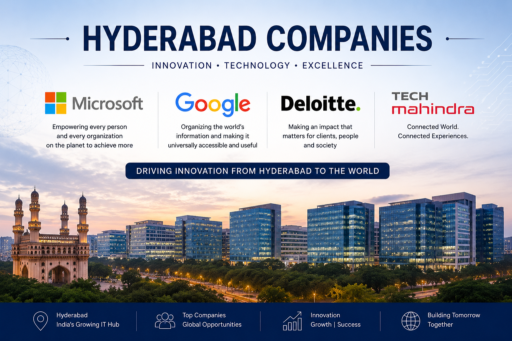
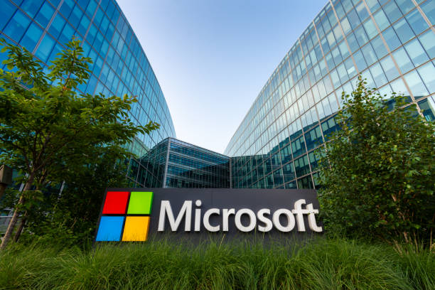
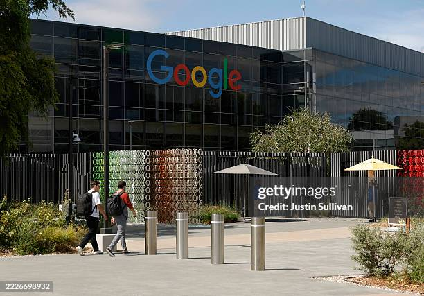
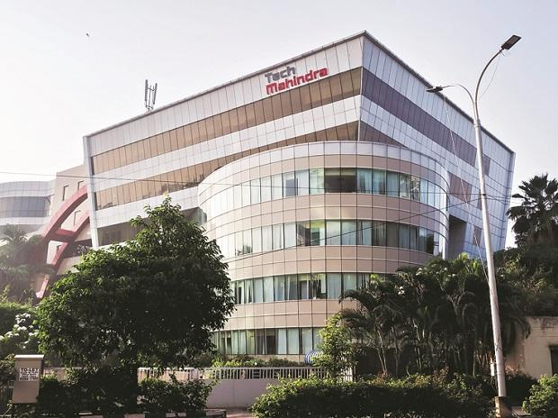

Explore India's IT Companies
PRODUCT AND SOFTWARE BASED COMPANIESHYDERABAD COMPANIES
ABOUT
Hyderabad is one of India's fastest-growing IT hubs and is known for its modern technology parks and world-class infrastructure. Many leading national and international companies have established their offices in the city. Companies such as Microsoft, Google, Deloitte, and Tech Mahindra provide software development, cloud computing, artificial intelligence, cybersecurity, consulting, and digital transformation services. Hyderabad offers excellent career opportunities for IT professionals and plays a major role in India's technology industry. The city's strong infrastructure, skilled workforce, and innovative environment continue to attract global technology companies.
COMPANIES
MICROSOFT

Microsoft has one of its largest development centers in Hyderabad. The company develops software products such as Windows, Microsoft Office, Azure Cloud, and Microsoft Teams. It also works on artificial intelligence, cloud computing, cybersecurity, and business solutions. Microsoft plays an important role in developing advanced technologies and creating employment opportunities.

Google has a major office in Hyderabad that focuses on software development, cloud computing, artificial intelligence, and digital services. The company develops products such as Google Search, Gmail, Google Maps, YouTube, and Android. Google is known for innovation and creating technology that is used by billions of people around the world.
DELOITTE
Deloitte is one of the world's leading consulting and professional services companies. Its Hyderabad office provides IT consulting, cybersecurity, cloud solutions, data analytics, auditing, and business advisory services. Deloitte helps organizations improve business performance through innovative technology solutions.
TECH MAHINDRA

Tech Mahindra is a leading Indian IT company with a strong presence in Hyderabad. It provides software development, cloud computing, cybersecurity, artificial intelligence, digital transformation, and IT consulting services. The company serves clients in industries such as telecommunications, banking, healthcare, manufacturing, and retail.